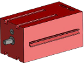
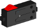
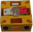
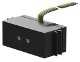
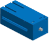
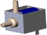
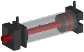
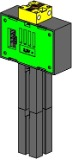

Encoder motor
Drives an axis while generating pulses used to estimate motion. In
this setup the PLC uses configured encoder counts; the installation
notes report variation in the resulting positions.
Robot and warehouse
Mini motor
Drives mechanisms such as conveyors and processing movements. Its
presence does not imply continuous position measurement.
Warehouse, processing and sorting

Button / reference switch
Signals that a moving part has reached a reference position. A
missed switch can leave the controller without the expected
reference signal.
Robot and moving modules

Phototransistor / light barrier
Detects interruption of a light beam at a transfer point. It detects
presence at that point; it does not identify the workpiece or always
establish that a carrier is loaded.
Warehouse, processing and sorting

Colour sensor
Classifies reflected light using thresholds. Distance, alignment,
lighting and surface condition affect its readings.
Sorting and input/output station

Compressor
Supplies compressed air to the pneumatic circuits. The local notes
report no direct pressure or vacuum measurement.
Robot, processing and sorting

Solenoid valve
Electrically switches the pneumatic air path to operate cylinders or
the vacuum mechanism.
Pneumatic circuits

Pneumatic cylinder
Converts air pressure into motion, for example for an ejector.
Coupled cylinders are also used in the robot’s vacuum-generation
mechanism.
Robot, processing and sorting
Suction cup
Holds a workpiece when a vacuum seal is established. Leakage or poor
alignment can prevent a seal and lead to failed pickups.
Robot and processing transfer gripper

Environmental sensor
The standard manual describes temperature, humidity, air pressure
and air-quality sensing, plus a separate brightness sensor.
Availability and wiring in the Turck configuration are not
established by the supplied notes.
Standard factory monitoring equipment